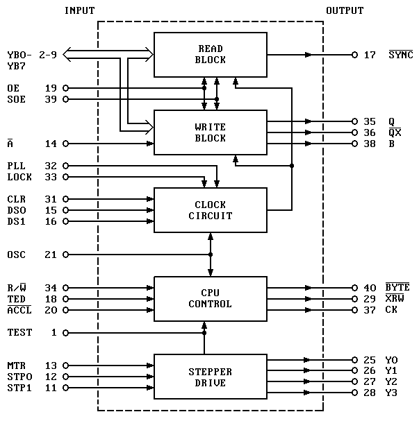

251828
BLOCK DIAGRAM
40/42 PIN GATE ARRAY FOR 1541B/1571

This page has been created by
Frank Kontros
.
Last updated May 17th, 1998.
![[Prev]](../../../../images/blue_prev.gif)
![[Next]](../../../../images/blue_next.gif)
![[Contents]](../../../../images/blue_toc.gif)
![[Commodore]](../../../../images/blue_cbm.gif)
![[New]](../../../../images/blue_new.gif)
![[Home]](../../../../images/blue_home.gif)